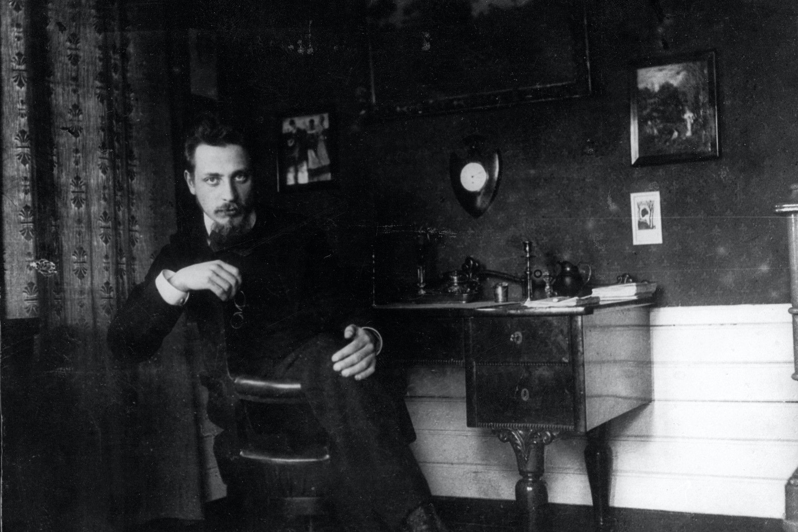
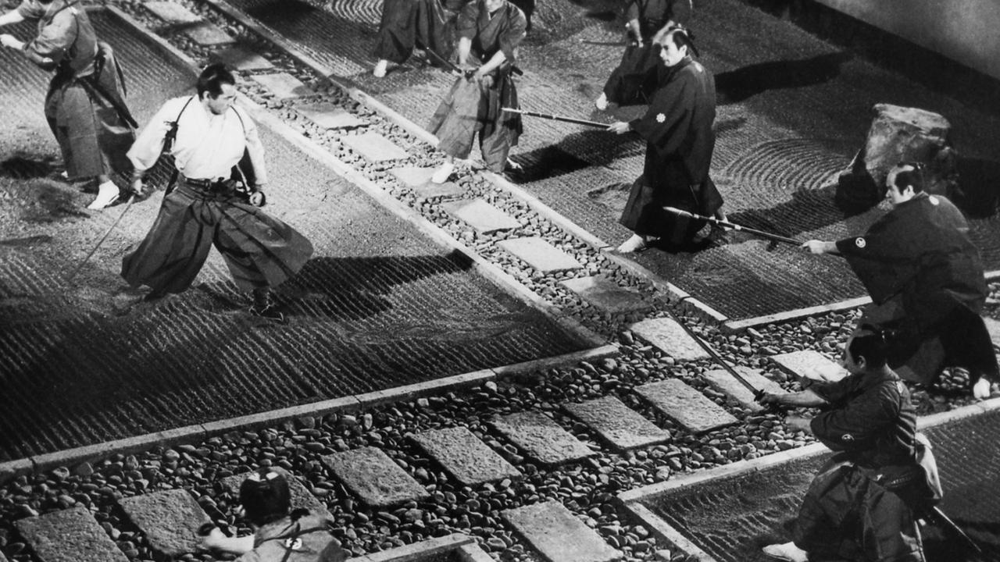
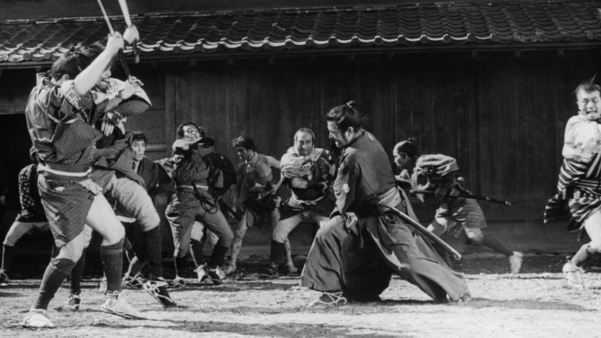
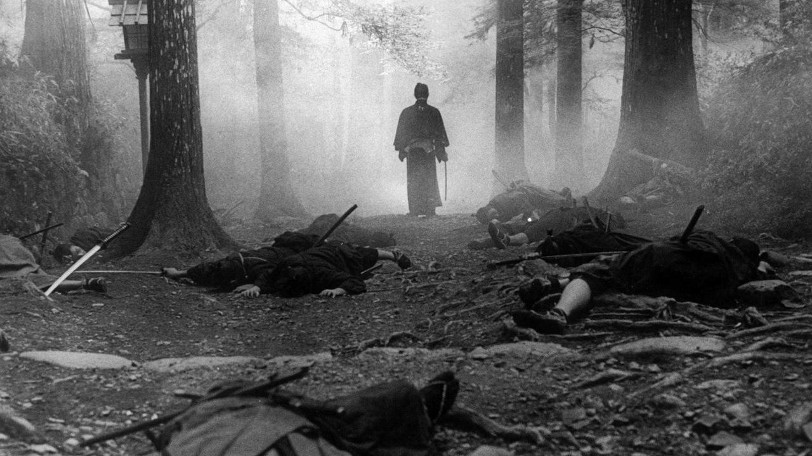
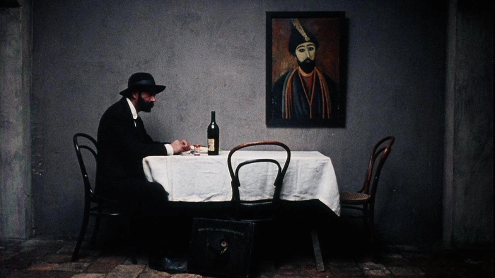
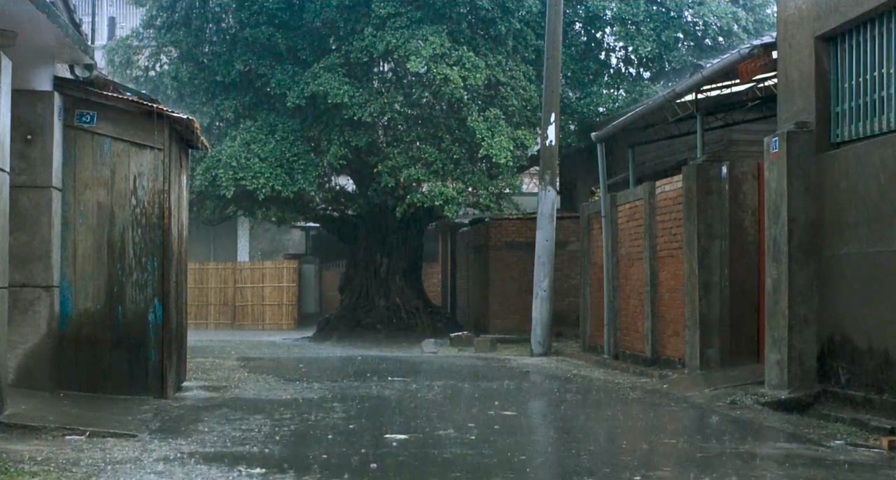
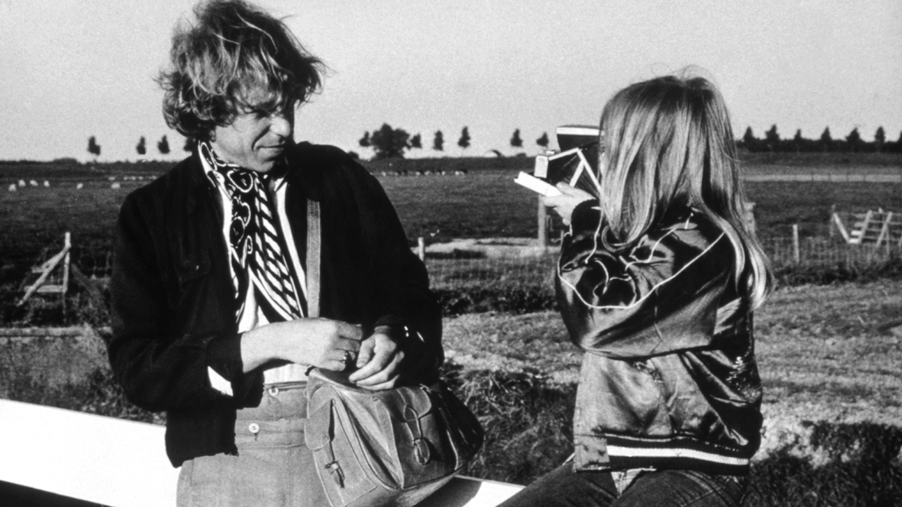

Something like a blog
LAST UPDATED — MARCH, 2024
"We shall distinguish the provinces of art, religion, science, history, and philosophy […], we shall assume that each of these is no mere abstraction but a concrete form of experience, an activity of the whole self in which every faculty, if it is permissible to distinguish between faculties, is engaged. […] It follows that each is in some sense a kind of knowledge, an activity of the cognitive mind." - R. G. Collingwood
March 17, 2024
Los apuntes de Malte Lauris Brigge (1910), Rainer Maria Rilke. Translated to Spanish by Juan de Sola for Alba Clásica.

Creo que debería empezar a trabajar un poco, ahora que aprendo a ver. Tengo veintiocho años y no me ha ocurrido prácticamente nada. Recapitulemos: he escrito un estudio malo sobre Carpaccio, una obra de teatro que se titula Matrimonio y trata de demostrar una tesis falsa con medios ambiguos, y algunos versos. Ay, pero los versos valen tan poco, cuando se los escribe de joven. Uno debería esperar y dedicar toda una vida a atesorar sentido y dulzura, una vida larga, a ser posible, y entonces, al término de la misma, quizá fuera capaz de escribir diez versos que merecieran la pena. Y es que, contrariamente a lo que cree la gente, los versos no son sentimientos (éstos se tienen ya en la primera juventud): son vivencias. Para dar a luz un solo verso hay que haber visto muchas ciudades, hombres y cosas, hay que conocer los animales, hay que sentir cómo vuelan las aves y saber con qué ademán se abren las flores pequeñas al amanecer. Hay que ser capaz de recordar caminos de regiones desconocidas, encuentros inesperados y separaciones que se veían venir de lejos; días de infancia aún por aclarar, a los padres a los que no podíamos evitar ofender cuando nos traían una alegría que nosotros no entendíamos (era una alegría destinada a otro); las enfermedades infantiles que aparecían de un modo tan extraño y experimentaban tantas transformaciones profundas y graves, días pasados en estancias tranquilas y recogidas, y mañanas junto al mar, el mar en general, los mares, las noches de viaje que pasaban altas y como una exhalación y volaban con todas las estrellas; y ni siquiera basta con ser capaz de pensar en todo esto. Hay que haber conservado el recuerdo de muchas noches de amor, ninguna de las cuales se parece a la otra, de gritos de parturientas y de mujeres que acaban de dar a luz y, aligeradas, blancas y durmientes, se cierran. Pero también hay que haber asistido a moribundos, estado con muertos en habitaciones con la ventana abierta y ruidos esporádicos. Y tampoco basta con tener recuerdos. Hay que saber olvidarlos, si son muchos, y tener la enorme paciencia de esperar a que regresen. Porque los recuerdos en sí todavía no existen. Solo cuando se tornan sangre en nosotros, cuando se convierten en mirada y gesto, cuando se hacen indecibles y no pueden distinguirse ya de nosotros, solo entonces puede suceder que, en un momento rarísimo, brote en su centro y emane de ellos la primera palabra de un verso.
January
Samurai Rebellion (上意討ち 拝領妻始末) (Masaki Kobayashi, 1967)

Yojimbo (用心棒) (Kurosawa Akira, 1961)

Sword of Doom (大菩薩峠) (Kihachi Okamoto, 1966)

November 13, 2023
Pirosmani (Giorgi Shengelaia, 1969)

"I can't live like other people do. I got stuck in the throat of this cursed life. It won't swallow me, nor let me go."
Tóngnián Wāngshì
PERSONAL — JUNE, 2023

Por mucho tiempo me sentí desconectada de mi infancia. Mis recuerdos escaseaban y las fotografías siempre han sido pocas. En los últimos tres años eso ha cambiado y se lo debo a tres principales eventos. Primero, me encontré con la Trilogía de Koker de Abbas Kiarostami y después con Pather Panchali de Satyajit Ray. En sus paisajes reconocí algo que existía dentro de mí y me trajeron muchas imágenes de vuelta. También visité Sicilia y sus jardines de frutas me recordaron a algunos jardines de Rosamorada.
Sin embargo, nada desenterró mis recuerdos más que A Time to Live, a Time to Die ( 童年往事, Tóngnián Wāngshì) de Hou Hsiao Hsien. Sentí el sol, el calor húmedo, la ligereza de mi ropa y de mi cuerpo de niña, mis pies descalzos tocando el suelo frio. Recordé la pila de agua donde iba a pasar la tarde echada como un gato, y el movimiento de los arboles al acariciarlos el viento. El olor a mango y a ciruela. El sonido de la tormenta que se aproxima al caer la noche. El olor de las primeras gotas de lluvia sobre la tierra seca, sobre el viejo techo de teja donde más tarde se abrirían nuevas goteras. Mi cortina hondeando en la ventana de mi cuarto. Las piedras mojadas. La pequeña corriente de agua que se forma entre la calle y la banqueta. El sonido de la mecedora de mi bisabuela. El batiente de piedra donde mi perro observaba la calle. La mancha de agua en la pared de ladrillos. La pintura resquebrajada. El pasto reverdecido por la mañana. Todo estaba ahí, en mis recuerdos compartidos con Hou Hsiao Hsien.
More like listening
INTRODUCTION — DEC 13, 2021

Certainly this is not the first time I try to start a blog (in other words, might delete later). The idea came back to me after reading some posts from Ellen's blog. Ellen writings are so natural and personal, I am constantly invested in whatever she is writting about. Sure, that's partly because I know her and she is awesome, but also because she is a great story-teller. Probably (to my dissapointment) my writings won't be like Ellen's, yet I can hope to have a sense of her warm and honesty.
Here I want to write about science, departing from the rigid and often uninteresting ways of academic writing. That on itself is a difficult task. I've learned English mainly from academic texts and my style reflects them. I often use myriad, utilise, elucidate, and many other words that might infuriate more than one native English speaker. Yet I hope to someday find a voice that is less artificial, less boring, and simpler. Over the past year I've become a more proficient academic reader: I read, I think, I often re-read and most of the time my hands rest, for I am not an avid notetaker. Quite the opposite, I am terrible at keeping notes. But I had enough of that. My hands must do something -- I must write. I want to write about my ideas, my questions, and the articles I find interesting, not because I have many ideas or because the ones I have make any sense (most of them surely don't), but it seems like an useful way of keeping track and giving me the time to develop them more deeply.
Inevitably, I'll write about film too. Those who know me are aware I'm always watching films and often talking about them. Films have always been an important part of my life and nowadays I have immersed myself on them with certain seriousness. There's a type of beauty in films which I cannot find elsewhere, and I want to understand where my feelings come from. In Alice in the Cities, Rüdiger Vogler character notes “Talking to yourself, that's actually more like listening than speaking” — I guess that's the whole point of this something like a blog.